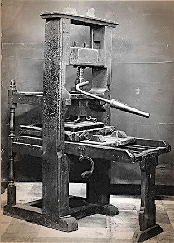

Mechanical presses as used in European printing remained unknown in East Asia. Instead, printing remained an unmechanized, laborious process with pressing the back of the paper onto the inked block by manual "rubbing" with a hand tool. In Korea, the first printing presses were introduced as late as 1881-83, while in Japan, after an early but brief interlude in the 1590s, Gutenberg's printing press arrived in Nagasaki in 1848 on a Dutch ship.

The diffusion of both movable-type systems was, to some degree, limited to primarily East Asia. The development of the printing press in Europe may have been influenced by various sporadic reports of movable type technology brought back to Europe by returning business people and missionaries to China. Some of these medieval European accounts are still preserved in the library archives of the Vatican and Oxford University among many others. However, none of these early European accounts before Gutenberg discuss printing.
Around 1450, Johannes Gutenberg introduced the metal movable-type printing press in Europe, along with innovations in casting the type based on a matrix and hand mould. The small number of alphabetic characters needed for European languages was an important factor.Gutenberg was the first to create his type pieces from an alloy of lead, tin, and antimony-and these materials remained standard for 550 years.